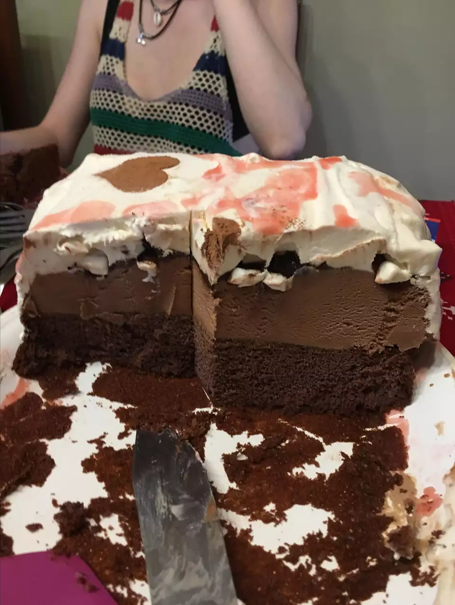

Ice cream cake

Description
A basic recipe for ice cream cake
You can use any flavor of ice crema or cake mix you like!
Ingredients
- 1 (18.25 ounce) package chocolate mix
- 1/2 gallon chocolate ice cream, softened
Steps
- Prepare cake according to cake directions; bake in a 9x13 inch baking dish and cool completely
- Use ice cream that comes in a rectangular carton. Remove the carton and, using a piece of string
or dental floss, cut the ice cream in half lengthwise (long side to long side) and place the two layers
side by side on a piece of waxed paper.
- Place the cooled cake over the ice cream. Trim the cake and ice cream so that the edges match.
- Place a board or serving platter over the cake, hold onto the waxed paper and board, and flip the
ice cream cake over. Remove the waxed paper and smooth out the seam between the ice cream slabs.
- Cover with waxed paper and freeze until very firm. Decorate as desired.